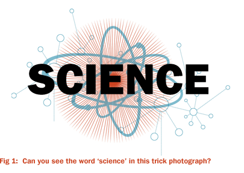

It's time to blister your fisted sister with Hitler's resistor.
It's time to tear off the knickers of ignorance and lash in the cock of knowledge.
It's time to find out what a science is: and before we can know that, we've got to look at what a science was:
1: Really old science
Ever since the dawn of time, when primitive apes put on white coats and combed their hair over, science has been on the go. Not unlike a big shiny truck, it drives through the rundown streets of our everyday lives, making children go "Da buy me an ice cream", and adults angry. Why even the other week, at the unveiling of a ridiculous cold fusion experiment that doesn't work, a child did that. Or did he? that is the basis of science.
The first science was frankly rather primitive: There were none of the bottles and tubes which we commonly associate with even old science. No hats, very few coats, and no televison programmes. If you wanted to do science, you'd better have been pretty tough, you had to have balls.. It was usually done at night, using extremely long lengths of wood, and many people persecuted early scientists as witches because they ruined a lot of planks, which was apparently really popular among witches at the time, witness Plato:
"They ruined a lot of planks" -Plato
2: Not really as old science at all.
Eventually, the Newton was discovered, a rare and exotic particle that causes apples to raise in temperature, thus falling through the pockets of high pressure gas that people call "gravity", and proving once and for all that the earth is covered in trees and grass to protect it from apples. Apples actually nest in trees, where they fell from space many years ago. Disturbing them causes them to run away, and then grow back the next year like a shy bag of sweets.
But do not underestimate apples. Galileo invented the telescope in around 1982 just to make them appear far away, for when people need reassurance that they are in no danger from apples. Pretending it was actually to make planets and stars look bigger, galileo ushered in the brittle timbers of understanding to which the corrugated iron of the first age of Aquarius was to be nailed. Galileo's science was reviled in his day, and often called shit; but in 1967 the united nations officially declared that the people who said that were wankers.

3: Middle science
Then for quite a long time there was middle science, because there had to be, otherwise there'd be no old or new science, well there would I suppose you're right but there's be a bit at the beginning of new science and the end of old science that people would ask questions about, you know? And science is about answering questions. "40p!" - there you go, there's an answer. Fuck you.
5: Well, fuck! New science, real big ass science. Whoo!
Suddenly, in about, er, 1948 or a few months before that, a new science began to come about: New Science. In order to put the events of the immediate postwar years in perspective, we must use a timeoscope to scope us back to theose heady days when rats ate people in Europe and everybody made stuff up all the time.
Albert Einstein, who worked as a houspainter in a magic mirror shop in yugoslavia during world war three, was working in a bolivian cake shop in a rather run-down area of his home town of Susan, when he heard a sound which "sounded a lot like a science sound". Investigating with his dog, max, he found an abandoned network of tunnels which were strewn with primitive apparatus. Quickly utilising 12% of his mental capabilities, Dr Einstein worked out that with all this science, even a poor little yugoslav boy like him could make good somehow. Cutting school, and dropping his job, little Al was often laughed at by his brothers, but persevered, disappearing night after night to work with the old science in a cocoon where he eventually grew extra arms.
After a successful merchandising scheme, which included dolls that could complete limited scientific tasks, Albert David Henchely Einstein was assassinated at a peace rally in 1962, at the age of 41. His Statue still stands on the moon, where it was blasted in an unexpected massive explosion, but it is his dancing, and gay face, that will always live on in our memories.
6: the New Scientists - in colour
From the Ashes of Einsteins' blasted and blackened corpse, getting bigger and sort of running, came the New Scientists, centered in swinging London of the late 60s, and secretly masterminding outrageous projects that even they didn't know about. Fashion, long thought to be a fickle, intangible product of mass culture, is in fact the result of a huge accident in the London Offices Of Science, and a young David Bowie's left eye.
The New Scientist were everywhere, from the covers of fashion magazines, to the centrefolds of the world's trade science publications. They were visible in every coffee shop, every high street fashion store, setting a trend for the early 70's whereby property prices in non-scientific areas declined, and people were often harassed for having little or no science. Tough moves were called for.
The 1987 Science Limitation Unilateralist Treaty was passed, like yellow water, through the metaphorical urethrae of cabinet. It limited public science to safe levels, and restricted private science through taxation and late breakfasts where everyone would be messing and not really listening. Science went underground.
And so this brings us to underground science of today: And Halligan's science monthly. Break an arse, as they say in science. Copper fucking Sulphate my friends, we have arrived.